エフェクターケースのグラウンド接続
2026年07月03日 カテゴリー：修理・改造・解析
エフェクターでは通常ノイズ対策のため、金属ケースをグラウンド（以下GNDと記載）に接続します。その方法についてまとめます。
※ 一部のMXRのエフェクター等ではケースのGND接続がありません。DCプラグを挿し込むとき、プラグ外周の＋がケースのGNDに当たってショートするのを防ぐ意図があるのかもしれません。
■ 通常のフォンジャックを使う場合
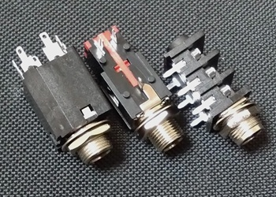
一般的なフォンジャックでは取り付けねじがスリーブとなっており、ケースに取り付けるとスリーブのGNDが接続されます。ケース内部の塗装によりこの接続が不十分になる可能性があるため、必ず取り付け部分の塗装をはがします。
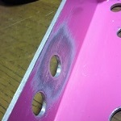
■ 絶縁型のフォンジャックを使う場合
できるだけ配線を少なくしたい場合、基板取り付け型のフォンジャックを使うことになります。
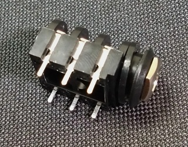
このタイプのジャックはねじ部とスリーブはつながっていないため、GNDとケースの接続を別途考えなければなりません。以下に接続方法をまとめます。
ばね
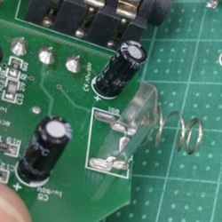
基板にばねを取り付け、ケースと接触させます。電池用のスプリングを流用してあることが多いようです。ポゴピンと呼ばれるばね入りの針のような部品を使う場合もあります。基板に無理な負荷がかからないように注意が必要です。
ラグ端子
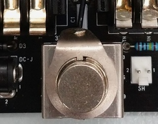
径の大きなラグ端子（またはGND端子付きワッシャー）にGND配線し、フットスイッチ等のねじ部分に取り付けます。この部品は安価な市販品がないようなので、BOOTHで販売しています。
ポット
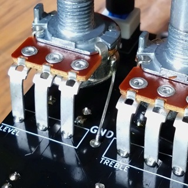
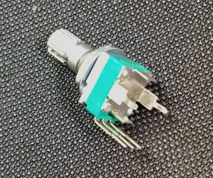
ポットのねじ部分はケースに接触するので、これを利用してGND接続します。ケース内部が塗装されている場合は、接触部分の塗装をはがす必要があります。配線材をポットにはんだ付けするか、基板固定用の端子があるポットを使用します。
ねじ
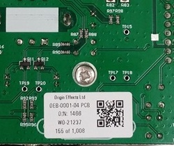
基板をケースにねじ止めすることでGND接続します。
■ ケース底板
ねじ取り付け部分の塗装をはがし、ねじを介してケース本体とGND接続します。
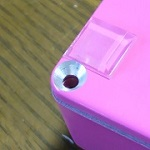
ねじでの導通が見込めない場合は、ケース本体と底板が接触する部分の塗装をはがしたり、ばね状の部品を使ったりします。
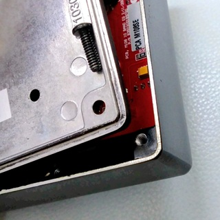
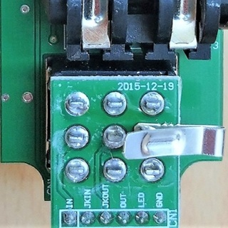